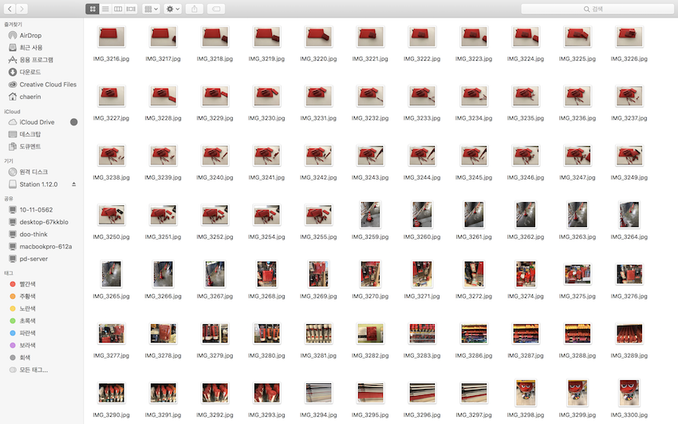

🌟ʏᴏᴜᴛᴜʙᴇ ʀᴇᴠɪᴇᴡ🌟

まず、赤のMacBook、財布、ポーチ、ペンなどを集めてカットごとに写真を撮ってストップモーションを作った。 私のMacBookに赤い物体が上がっ過程を撮った。 その後、続いて出てくる映像は、学校の赤のすべてのものを撮ってみた。 撮ったビデオを作った。多撮っなに96枚であった。9 6枚をpremiere pro CCで編集をして、開始する画面も作りBGMも入れた。 一枚一枚の速度を調節することができますが、私はすべての写真の速度を同じようにした。
<反省点・改善点・分かったこと>
プログラムを使用する方法を知り、インターネットでのみ見ていたストップモーションを直接作ることができるようになった。 惜しい点はもう少しストーリーがあったらする惜しい点あり、次の再作成する場合よりも作ることができるようだ。
<ʏᴏᴜᴛᴜʙᴇ>